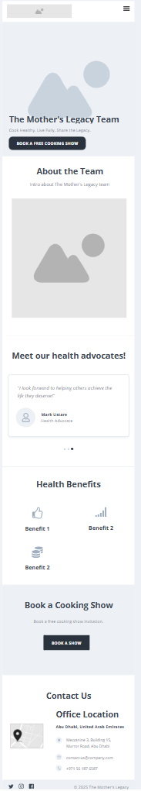
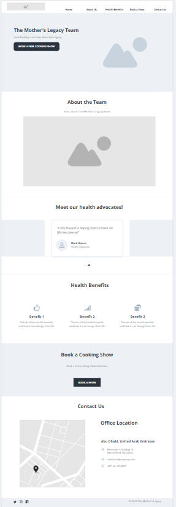

This name reflects the caring and family-centered mission of the SaladMaster health advocates, highlighting the nurturing legacy mothers leave behind in promoting healthy living. It also includes the team's location to localize the service for clients in Abu Dhabi.
Optional domain availability: motherslegacyauh.com or motherslegacy.ae
This website will provide basic information about SaladMaster and its benefits, introduce the passionate health advocates of the Mother’s Legacy Team, and offer a convenient way to contact the team to book a free health-focused cooking show. The site’s mission is to inspire families to live healthier through proper cooking methods and nutritious food.
Mobile View:
Desktop View:
Note: Idea may change as I build the site.